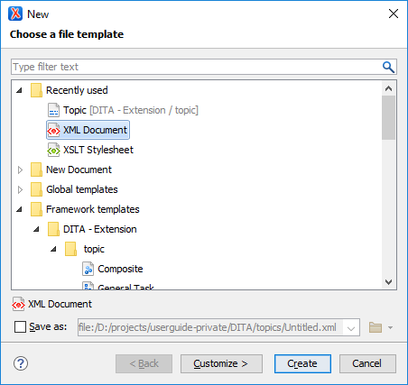

New Document Wizard
Oxygen XML Editor supports a wide range of document types. The New Document wizard presents the default associations between a file extension and the type of editor that opens the file. To customize these default associations, open the Preferences dialog box and go to File Types.
The New Document wizard creates a skeleton document that may contain a root element, the document prolog, and possibly other child elements depending on options that are specific for each schema type. You can also create your own custom document templates and select them from this wizard.
New Document Wizard
-
Click the
 New button on the toolbar or select .
New button on the toolbar or select .Result: The New Document wizard is displayed:
Figure 1. New Document Wizard The first page of the wizard displays the supported document types and groups them in the following categories:- Recently Used
- Contains the list of the most recently used file types. To clear the history
of this folder, right-click an entry and select
 Remove all
(or select an entry and press Ctrl +
Delete on your keyboard). To remove a single entry,
right-click and select
Remove all
(or select an entry and press Ctrl +
Delete on your keyboard). To remove a single entry,
right-click and select  Remove (or select the entry and press
Delete on your keyboard).
Remove (or select the entry and press
Delete on your keyboard). - New Document
- Contains the list of all supported document types. This list includes XML, XSL, XML Schema, Document Type Definition, Relax NG Schema, XQuery, Web Services Definition Language, Schematron Schema, CSS, Text, PHP, JavaScript, Java, C, C++, Batch, Shell, Properties, SQL, XML Catalog, PERL, JSON, and more.
- Global Templates
- Contains the list of built-in templates as well as user-defined custom templates. You can create your own custom document templates and add them to the templates folder of the Oxygen XML Editor installation directory.
- Framework Templates
- Contains the list of templates defined in the Document Type configuration dialog box (Templates tab) for each framework.
- User-defined template directory
- You can add your own custom templates by creating template files in a directory and then add that directory to the list of template directories that Oxygen XML Editor uses in the Document Templates preferences page. This user-defined directory will also appear in the New Document wizard.
- Select the type of document that you want to create.Tip: You can use the text filter field at the top of the dialog box to search for a specific template.
- If you want to change the default name and path of the file, select
the Save as option and specify the file path (the Show "Save as" option to save newly created documents in the "New"
document wizard option must be selected in the
Save preferences page). Otherwise, the file will be opened in a
new tab with a default untitled name and the document path will not yet exist
until you save it.Note: For DITA documents, the dialog box includes some additional options for generating a title, file name, and root ID attribute. For more information, see Creating a New DITA Topic.
-
If you want to use the default settings in the creation process, select Create at the bottom of the dialog box.
Result: The document is created using the default settings and the new file is opened in the appropriate editor.
-
If you want to configure properties before creating the file, select Customize. This action is available for XML, XML Schema, Schematron, and XSL documents.
Result: A new file configuration dialog box is opened that allows you to customize various options, depending on the document type you selected. After configuring the options in this wizard, click Create to create the file and open it in the appropriate editor.
XML Document Configuration Page
If you selected  XML Document for
the type of file you want to create and selected the Customize
option, the configuration dialog box will include the following options:
XML Document for
the type of file you want to create and selected the Customize
option, the configuration dialog box will include the following options:
- Schema URL
- Specifies the path to the schema file. When you select a file, Oxygen XML Editor analyzes its content and tries to fill in the rest of the dialog box.
- Schema Type
- Allows you to select the schema type. The following options are available: XML Schema, DTD, RelaxNG XML syntax, RelaxNG compact syntax, and NVDL.
- Public ID
- Specifies the PUBLIC identifier declared in the document prolog.
- Namespace
- Specifies the document namespace.
- Prefix
- Specifies the prefix for the namespace of the document root.
- Root Element
- Populated with elements defined in the specified schema, enables selection of the element used as document root.
- Description
- A small description of the selected document root.
- Add Optional Content
- If you select this option, the elements and attributes defined in the XML Schema as optional are generated in the skeleton XML document.
- Add First Choice Particle
- If you select this option, Oxygen XML Editor generates the first element of an
<xs:choice>schema element in the skeleton XML document. Oxygen XML Editor creates this document in a new editor panel when you click OK.
XSLT Document Configuration Page
If you selected XSLT Stylesheet for the type of file you want to create and selected the Customize option, the configuration dialog box will include the following options:
- Stylesheet version
- Allows you to select the Stylesheet version number. You can select from: 1.0, 2.0, and 3.0.
- Add documentation annotations
- Select this option to generate the stylesheet annotation documentation.
XML Schema Document Configuration Page
If you selected XML Schema for the type of file you want to create and selected the Customize option, the configuration dialog box will include the following options:
- Default XML Schema version
- Uses the XML Schema version defined in the XML Schema preferences page.
- XML Schema 1.0
- Sets the
@minVersionattribute to 1.0 and the@maxVersionattribute to 1.1. - XML Schema 1.1
- Sets the
@minVersionattribute to 1.1. - Target namespace
- Allows you to specify the schema target namespace.
- Namespace prefix declaration table
- This table contains namespace prefix declarations. Table information can be managed
using the
 New and
New and  Delete buttons.Tip: For further details on how you can set the version of an XML Schema, go to Setting the XML Schema Version.
Delete buttons.Tip: For further details on how you can set the version of an XML Schema, go to Setting the XML Schema Version.
Schematron Document Configuration Page
If you selected Schematron for the type of file you want to create and selected the Customize option, the configuration dialog box will include the following option:
- Schematron version
- Specifies the Schematron version. Possible options: 1.5
(deprecated) and ISO.Note: Starting with version 16.0 of Oxygen XML Editor, the support for Schematron 1.5 is deprecated. It is recommended to use ISO Schematron instead.
JSON Document Configuration Page
If you select JSON for the type of file you want to create and select the Customize option, the configuration dialog box will include the following options:
- Schema URL
- Specifies the path to a JSON Schema file that will be used to generate key-value pairs.
- Associate Schema in the Document
- If you select this option, the JSON instance will be generated with the JSON Schema associated directly in the document.
- Generate Optional Properties
- If you select this option, the JSON instance will be generated with optional properties that are defined in the JSON schema. Otherwise, only the required properties will be generated.
- Generate Additional Content
- If you select this option, the JSON instance will be generated with additional
properties that are defined in the JSON schema as
additionalPropertiesand additional items that are defined asadditionalItems(in the case of an Array).